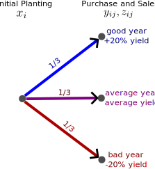

Linear Programming Under Uncertainty
Lecture 21
October 25, 2023
Review and Questions
Solid Waste Management
- Different types of facilities with different residual wastes, which impacts the broader system.
- Model as a network, where we care about the flows between different nodes.
- Becomes a mixed integer program if we can choose not to operate facilities.
Questions

Text: VSRIKRISH to 22333
Decision-Making Under Uncertainty
Certainty and LP
Certainty (e.g. all parameters and relationships between decision variables and outcomes are known) is a key assumption of linear programming.
But most systems problems aren’t actually deterministic.
Approaches to Decision-Making Under Uncertainty
A Common Approach:
- Solve deterministic problem using best estimates.
- Stress-test solution with Monte Carlo or include additional safety margins (more on this later).
Representing Uncertainty in Mathematical Programs
Alternative:
- Solve a stochastic problem for best expected performance (or similar summary statistic).
We can represent uncertainty through scenarios and (conditional) sequential events, then rewrite the decision problem.
Example: Land Allocation
Land Allocation/Farmer Problem
A farmer can grow wheat, corn, and sugar beets on 500 ha of land. How much land should they allocate to each crop?
Key information For Problem
- Planting costs are $150, $230, and $260 per acre for wheat, corn, and sugar beets, respectively.
- The farmer requires 200T of wheat and 240T kg of corn for feed, and excess can be sold for $170 and $150 per T, respectively.
- Purchasing crops costs $40 more than the selling prices.
- Sugar beets are sold at $36/T up to 6000T, at which point the price drops to $10 per T.
Farm Yields
From prior experience, the farmer knows that in an average year, yields are:
- 2.5 T/acre for wheat;
- 3 T/acre per corn;
- 20T/acre for beets.
Decision Variables
What are the decision variables?
| Variable | Definition |
|---|---|
| \(x_i\) | acres of crop \(i\) planted |
| \(y_i\) | T of crop \(i\) purchased |
| \(z_i\) | T of crop \(i\) sold |
One twist: sold beets will be represented by two different \(z\)-variables (\(z_3\) and \(z_4\)), based on whether we exceed 6000T.
Deterministic Problem Formulation
\[ \begin{align} \min_{x, y, z} & \quad 150x_1 + 230 x_2 + 260 x_3 + 238 y_1 + 210 y_2 - 170 z_1 \\ & \qquad -150z_2 - 36z_3 - 10z_4 \\[1ex] \text{subject to:} \quad & x_1 + x_2 + x_3 \leq 500 \\[0.5ex] & 2.5 x_1 + y_1 - z_1 \geq 200 \\[0.5ex] & 3 x_2 + y_2 - z_2 \geq 240 \\[0.5ex] & z_3 + z_4 \leq 20 x_3 \\[0.5ex] & z_3 \leq 6000 \\[0.5ex] & x_i, y_i, z_i \geq 0 \end{align} \]
Deterministic Solution
| Variable | Wheat | Corn | Beets |
|---|---|---|---|
| Area (acres) | 120 | 80 | 300 |
| Yield (T) | 300 | 240 | 6000 |
| Sales (T) | 100 | – | 6000 |
| Purchased (T) | – | – | – |
This solution yields a profit of $118,600.
What About Uncertainty?
But yields tend to vary from year to year. From prior experience, the historical variability is:
- in a good year, yields can be 20% above average;
- in a bad year, yields can be 20% below average.
To simplify things, let’s assume these yields vary consistently across crops and that each scenario (average, good, bad) has an equal probability of occurrence.
Stochastic Decision Variables
What should change about our decision variables?
| Variable | Definition |
|---|---|
| \(x_i\) | acres of crop \(i\) planted |
| \(y_{ij}\) | T of crop \(i\) purchased in scenario \(j\) |
| \(z_{ij}\) | T of crop \(i\) sold in scenario \(j\) |
Two-Stage Problems
This is typical of a two-stage decision problem:
- Make an initial decision (e.g. how much to plant) which must be committed to ahead of knowing the stochastic realization;
- Make a subsequent recourse decision based on the realization (e.g. do we have to purchase additional crops?)
Stochastic Objective
How can we formulate an objective?
First choice: what statistic are we trying to optimize?
Let’s choose the expected value \(\mathbb{E}\left[\text{Profit}\right]\).
Other possible choices: quantiles (robust optimization) to hedge against worst-case outcomes, variance (to minimize year-on-year fluctuations).
Probabilities and Scenario Trees
Since we have a discrete (and small) set of possible outcomes, we can use a scenario tree to write out the possible outcomes.

Stochastic Objective
Our new objective becomes:
\[\begin{alignedat}{2} &\min_{x, y, z} & & \quad 150x_1 + 230x_2 + 260x_3 \\[0.5ex] & &&\qquad -\frac{1}{3} \left(170z_{11} + 150z_{21} + 36z_{31} + 10z_{41} - 238y_{11} - 210 y_{21}\right) \\[0.5ex] & &&\qquad -\frac{1}{3} \left(170z_{12} + 150z_{22} + 36z_{32} + 10z_{42} - 238y_{12} - 210 y_{22}\right) \\[0.5ex] & &&\qquad -\frac{1}{3} \left(170z_{13} + 150z_{23} + 36z_{33} + 10z_{43} - 238y_{13} - 210 y_{23}\right) \end{alignedat}\]
Stochastic Contraints
\[\begin{alignedat}{2} &x_1 + x_2 + x_3 \leq 500 \\[0.5ex] &\color{blue}3x_1 + y_{11} - z_{11} \geq 200, && \qquad \color{blue}3.6x_2 + y_{21} - z_{21} \geq 240 \\[0.5ex] &\color{blue}z_{31} + z_{41} \leq 24x_3, && \qquad \color{blue}z_{31} \leq 6000 \\[0.5ex] &\color{purple}2.5x_1 + y_{12} - z_{12} \geq 200, && \qquad \color{purple}3x_2 + y_{22} - z_{22} \geq 240 \\[0.5ex] &\color{purple}z_{32} + z_{42} \leq 20x_3, && \qquad \color{purple}z_{32} \leq 6000 \\[0.5ex] &\color{red}2x_1 + y_{13} - z_{13} \geq 200, && \qquad \color{red}2.4x_2 + y_{23} - z_{23} \geq 240 \\[0.5ex] &\color{red}z_{33} + z_{43} \leq 16x_3, && \qquad \color{red}z_{33} \leq 6000 \\[0.5ex] &x_i, y_i, z_i \geq 0 \end{alignedat}\]
Stochastic Solution
| Variable | Wheat | Corn | Beets |
|---|---|---|---|
| Deterministic Area (acres) | 120 | 80 | 300 |
| Stochastic Area (acres) | 170 | 80 | 250 |
How do we interpret the differences?
- Good year: Won’t waste acreage on extra beets (6000T yield in stochastic solution, 7200T for deterministic)
- Bad year: Will make less off beets, profits from wheat should help cover extra corn purchase.
Value of the Stochastic Solution
Comparing Deterministic and Stochastic Solution
- Deterministic Solution: “Expected” Profit (no uncertainty) = $118,600
- Stochastic Solution: \(\mathbb{E}[\text{Profit}]\) = $108,390.
Can we directly compare the deterministic and stochastic solution values that we have obtained so far?
Expected Performance of Deterministic Solution
| Year | Deterministic Profit | Stochastic Profit |
|---|---|---|
| Good | $148,000 | $167,000 |
| Average | $118,600 | $109,350 |
| Bad | $56,800 | $48,820 |
Expected Profit from Deterministic Solution under uncertainty: $107,240
Value of the Stochastic Solution
We can now compare the difference in expected profits under uncertainty, which is the fair comparison.
This is called the value of the stochastic solution (VSS), or sometimes the expected value of including uncertainty (EVIU).
\[\begin{aligned} VSS &= \mathbb{E}[\text{Stochastic Profit}] - \mathbb{E}[\text{Deterministic Profit}] \\[0.5ex] &= \$108,390 - \$107,240 \\[0.5ex] &= \$1,150. \end{aligned}\]
Expected Value of Perfect Information
Another relevant quantity, the expected value of perfect information (EVPI), concerns the value associated with better forecasts.
Expected Value of Perfect Information
If the farmer had perfect foresight and could allocate acreage \(x\) accordingly and sell/purchase \(z\) and \(y\) optimally (versus taking the 1/3-probability stochastic solution),
\[\mathbb{E}[\text{Profits} | \text{perfect information}] = \sum_j p_j \times \text{Profits}_j = \$115,405.\]
\[\text{EVPI} = \$115,405 - \$108,390 = \$7,015\]
The EVPI can be interpreted as the amount the farmer might be willing to pay for an improved forecast.
Key Takeaways
Decision-Making and Uncertainty
- A solution obtained assuming deterministic outcomes might “on paper” yield better anticipated outcomes.
- Common approach is a two-stage optimization framework:
- Make an initial decision;
- Recourse based on which scenario is realized.
- Scenario trees help build out the representation of outcomes and probabilities.
Value of the Stochastic Solution
- Solutions to stochastic problems can produce a better expected outcome than the deterministic solution, but will perform better/worse in any given scenario.
- Value of the stochastic solution quantifies expected improvement in performance.
- Expected value of perfect information: amount you might be willing to pay for improved forecasts.